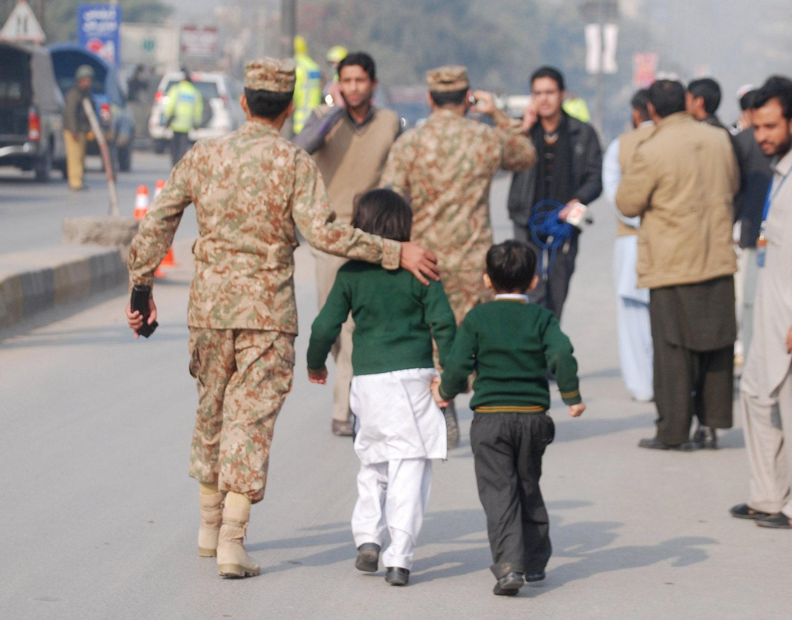

L'insécurité, un frein d'accès à l'éducation des filles
Source: ZanaAfrica
L'éducation est la seule guerre que l'on doit mener ensemble pour changer la carte du monde.
- Mofaddel Abderrahim
La guerre, un effet dissuassif pour l'éducation
Principalement dans les pays du Sud, de nombreux pays sont
politiquement, économiquement et même socialement instables avec
les multiples guerres ou conflits. Cette
insécurité met en péril l’éducation des filles qui ne peuvent
pas forcément accéder aux établissements scolaires. En effet, les
trajets ne sont pas assez sécurisés pour les parents, et chaque jour, cette épreuve est une nouvelle source d'inquiétudes pour chaque famille. Alors pour éviter de mettre la vie en danger de leur enfant, ils leur sacrifient les peu d'années d'études auxquelles ils peuvent avoir accès.

Source:; Newsweek
Dans certains pays comme le Nigéria, des groupes de
djihadistes tel que Boko Haram commettent des attaques, et même des
enlèvements comme en 2014, dans des établissements scolaires afin de
rejeter « l’éducation occidentale » qui serait trop ancrée dans les mœurs. Les 276 lycéennes de Chibok qui ont été enlevées, ont été réduites en esclavage (mariages forcés avec des combattants).
Dans d’autres pays
comme sur le continent asiatique, des groupes de djihadistes comme les Talibans au Pakistan, commettent de nombreuses attaques envers
les établissements scolaires (entre 2007 et 2015, 867 attaques terroristes dans le pays ne visant pas seulement les écoles, selon
la base de données mondiale sur le terrorisme) afin que les élèves
n’aient pas accès à l’éducation. Ce sont principalement les
filles qui sont les premières visées, dont le gouvernement essaye
depuis plusieurs années de mettre en place un dispositif de sécurité
pour que leur enseignement soit réalisé dans des conditions plus sûres.
C’est pour cela
que dans plusieurs pays, la priorité des parents est de garder leur
fille en sécurité, sachant qu’en allant à l’école leur retour
n’est pas garanti.
Carte d'alphabétisation
L'alphabétisation des filles à travers le monde peut montrer les difficultés de valoriser l'éducation de certains pays. Ces données de l'UNESCO permettent d'avoir une autre approche de l'éducation des filles dans des régions qui sont en guerre ou présente une forte insécurité. Il est donc possible de constater qu'en Afrique, surtout à partir des années 2000 grâce à des données plus présentes, que des pays sont très en retard sur l'alphabétisation des filles. Par exemple en 2000, au Tchad il y a seulement 12,8% de femmes de plus de 15 ans qui savent lire et écrire, et en à peine 15 ans, ce pourcentage s'est élevé à 31,75%. Il reste toutefois trop faible pour ces femmes, mais au sein de ce même pays, entre 2002 et 2015, 62 attaques terroristes ont été recensées avec des centaines de morts. Ces chiffres montrent bien que malgré l'insécurité, il y a un dispositif qui s'est développé pour que les filles aient un accès à l'éducation, en essayant de priviligier leur sécurité grâce à la mise en place de soldats aux abords des établissements scolaires.
En revanche, pour les pays du Nord dont les données sont présentes, on peut voir qu'il y a un très fort pourcentage d'alphabétisation pour les filles âgées de plus de 15 ans. Cela est dû à une éducation obligatoire, mais aussi au fait qu'il n'y ait pas de guerres au sein des pays, malgré les multiples attaques terroristes en Europe ou aux Etats-Unis, qui n'ont pas de répercussions directes sur les établissements scolaires et à leur accès.